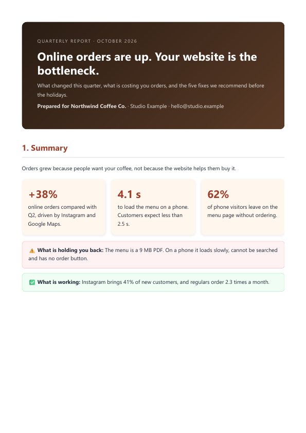
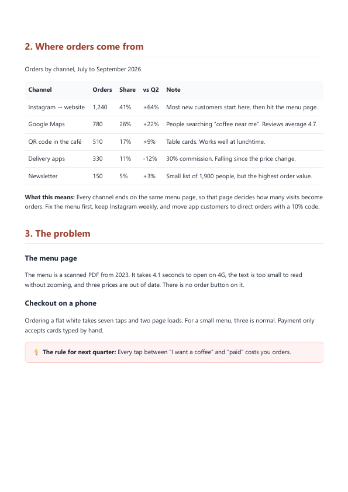
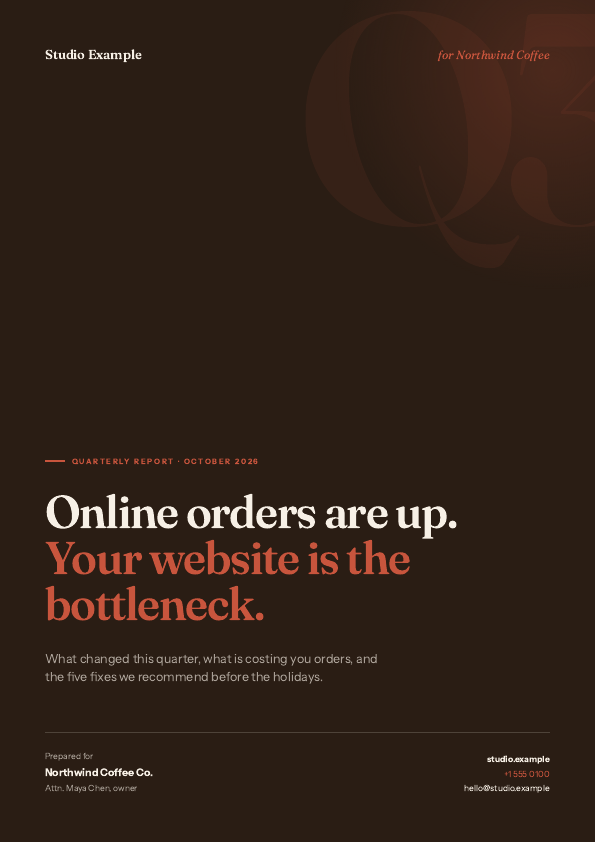
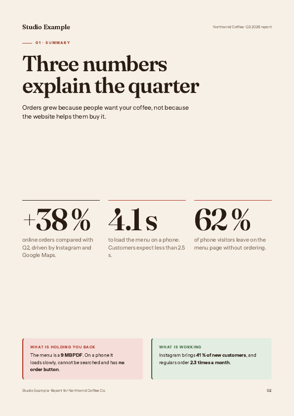

Same content. Same AI. One skill.
Before · a typical AI PDF


White frame, floating cover, half-empty pages.
After · pdf-design


Every page designed, full-bleed, real text.


White frame, floating cover, half-empty pages.


Every page designed, full-bleed, real text.